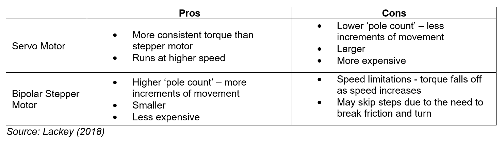
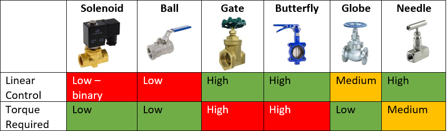

|
This post focuses on the identification and selection of components for a cyber-physical system (CPS).
The content in this post is based on my experience developing a prototype CPS for a group project
(see link to 'Tappy' below for the final prototype).
|
Designing a cyber-physical system (‘CPS’) requires the identification, selection and integration of different types of components
– e.g. electronic, mechanical and software. This semester our team designed a prototype CPS that incorporated all three of these elements
(see Tappy link opposite). While our team had experience with electronic and software components, none of us had experience working with
mechanical components. This sections below discuss the process our team went through to identify and select the valve and motor for our smart
tap prototype, and reflect on the process to suggest improvements for the new branch of engineering.
Identifying and selecting components
To start our process, we tasked one team member with identifying potential valves and motors and asked them to report back on the most appropriate
components. We intended to select and purchase the components identified by the team member ASAP after that report.
This approach underestimated the variety in components, particularly valves. While all valves control flow, methods of doing so differ
significantly. For example, some methods and valves have effective flow ‘shut-off’ capabilities, while others are more capable at regulating
flow rate. Within those categories there are valves that ‘shut-off’ more easily than others, and those that more finely regulate flow rate
than others. At the end of the fortnight, we had more than five valve options and two motor options. We discussed the options at a high-level
and decided to purchase one valve and motor to test them out.
After some prompting from John Debs from ANU Maker Space, our team realised that selecting a valve
and motor required us to be more specific about the intent of our application – for the prototype and at scale. This led us to prioritise a single
design requirement for our prototype: the capability to provide different flow rates for different objects.
We intended to design a smart tap prototype that could scale beyond the household to other settings where a wider range of objects may be washed, but
maintain the same or very similar components. In practical terms, we did not want the prototype to provide accurate flow rates
for 1 – 2 household items on demonstration day, but require a full redesign were it to scale to a commercial kitchen.
Our team also agreed we would make a conscious effort to innovate throughout the project, which supported the priority given to controlling
flow rate. Controlling for flow rate was a novel part of the design, while controlling for flow duration alone is achievable with
existing motion sensor taps.
Which motor?
After agreeing our priority design requirement, we were left with a choice between a servo motor and a stepper motor.
Pros and cons of both motors are included in the table below:

The key trade-off was around speed and torque vs ‘pole count’, or the increments of movement the motor allowed. Given our intention to
provide a range of increments to which the valve could open (related to flow rate), we chose the stepper motor.
This was a conscious trade-off against the speed of the motor and torque at higher speeds.
Which valve?
For the valve it was necessary to consider both the degree of linear control of the valve opening and the torque required to open the valve.
Ideally the degree of control would be high, and the torque required would be manageable with a stepper motor. We agreed that degree of
linear control was more important than torque required as, if need be, we could use gears to improve the torque; that is,
we were willing to trade-off torque for linear control.

Based on this review, a globe or needle valve appeared to be our best options. Ultimately, we decided to use the needle valve given
our intention to provide as much linear control as possible for the demonstration of the prototype.
In addition, we were able to connect the needle valve directly to the pin of the stepper motor.
Reflections
Given the different types of components that make up a CPS, cybernetic engineers will likely need to identify and select components with
which they have no or minimal experience. In our case, we tried to overcome our lack of experience with mechanical components by purchasing
a few valves and motors and testing them out. See a below our ‘Iteration Workstation’ from the demonstration of the prototype
– this shows our journey selecting valves and motors in the river-like lines at the top, and some of the leftover artefacts on the table
at the bottom.

Through this experience we learnt about the need to adapt our approach to identification and selection given the range of components in a CPS.
While our team was keen to apply a rapid test, fail, and iterate approach based on our experience with software components, this approach had
greater time and financial costs with mechanical components. The mechanical equivalent of writing, testing, and updating a C++ script,
for example, was ordering a valve, connecting and testing the valve to a tap and then (if the valve was unsuitable) proceeding to order
another valve. Equally, while electronic components can often be reused for new and different applications, mechanical components
(particularly valves) are more specific to an individual application. This had consequences for our prototype from a decommissioning
perspective, as we were left with extra valves at the end of the project without a clear path to reuse.
Deciding our priority design requirement(s) upfront would have provided clearer guidance for the identification and selection of components
for our prototype. For the new branch of engineering, this could take the form of a defined step in the design stage of the CPS lifecycle
to identify design criteria – for a prototype and at scale. These criteria could then be used to guide decision making when selecting
components for a CPS, regardless of the type of component.
Lackey, B 2020, ‘What’s the difference between Servo and Stepper Motors?’, viewed 30 September 2020, https://www.machinedesign.com/mechanical-motion-systems/article/21836868/whats-the-difference-between-servo-and-stepper-motors
|